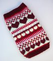
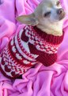
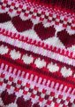

|
||
Premium Patterns Wintry Mix Mitts Love Bytes HawkeyeFree Patterns Kiddie Cadet Summerlin Ruffled Scarf Seamless DS Sock Simply Seamless Pouch Myriads of MushroomsExtras DIY Mitten Blocker Felt Patch Tutorial Yarn Dyeing Tutorial Needle Pouches Knitting Journal |
February 05, 2008 - Posted by Alice SchneblyRufus LoveProject Specs When Grace showed me this design on Ravelry, I knew that Rufus had to have this sweater! He’s definitely a little loverboy, so this sweater is perfect for him—especially with Valentine’s Day right around the corner! Although I’ve done stranded colorwork before, it’s always been in the round. This sweater is knit flat and I found it a lot harder to keep my tension even, especially on the purl rows. I also couldn’t find my size 7 Denise tips, so I had to resort to using straight needles which added to the awkwardness. It has been so long since I’ve knit on straights! I think Swish Superwash was a great choice for this sweater. This is the second time I’ve used this yarn now. Before adding the ribbed border and the sleeves I gave the sweater a nice warm bath in Kookaburra which made the yarn even softer. I was also able to mostly hide any tension errors with a good blocking. There’s some fuzziness and pilling visible on the ribbing and around the edges but it’s nothing that I would worry about, especially on a dog sweater. I really love how vibrant the colors are and it was a pleasure to work with. I can definitely see myself using this yarn again. This pattern is constructed like most dog sweaters, but the Fair Isle design really adds that extra something. It is just too cute! This time I made a few alterations to the chart. Mostly I just added an extra row here and there to cut down on the number of times I’d have to break the yarn—and the number of ends I’d have to weave in. Even so, there were lots of ends to tend to when finishing. I guess this is a downside to any knitting where you’re using a few colors. I also changed the shape of the sleeves so that they fit Rufus better. When I knit them as instructed they really looked goofy on him. I added short rows to the top of the sleeve to add some extra length. I do like how it turned out, though it is more loose and sleeve-like than tight ribbing around the leg. If I knit this sweater again, I would change a few things. Because the way Rufus is built—he has a large chest but a smaller neck—I’d start with less stitches and increase to the number for his size chest. I’d also make the leg openings smaller since he has such skinny legs! I did enjoy knitting this sweater though and I think it looks super cute on Rufus so it’s definitely a success. MySavannahCottage also offers some other really great designs in her Etsy Shop, including an over-the-top Christmas Sweater. Check out her blog as well—she’s a very talented knitter and is also offering her Boyfriend Dog Sweater Pattern for free! It’s really cute and I’m adding it to my queue right away! |
   Recent ReviewsRecent Posts
 Our Favorites
|
| © 2007 KathrynIvy.com | ||
{kind=link}
{kind=link}
{kind=link}